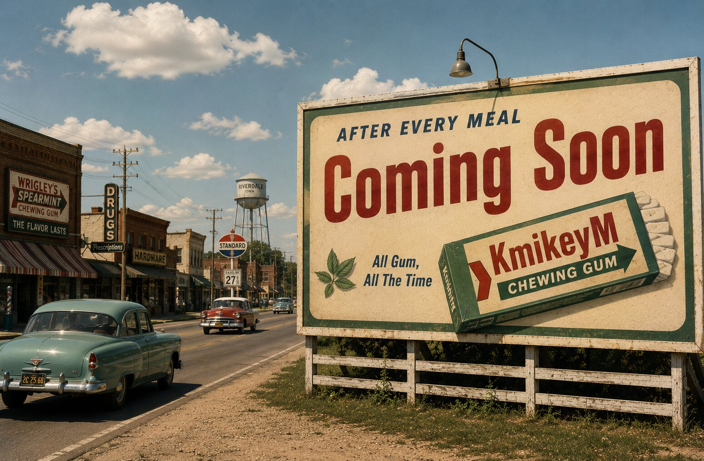

GUMDEMO

hero image goes here
assets/coming-soon.jpg
assets/coming-soon.jpg
$350 of gum.
livethe catalog
Every pack in the haul, cataloged like a database: brand, flavor, format, and the company behind it. Filter the wall, follow the corporate trail, watch the reviews land.
browse the haul
open the catalog →